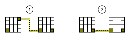

To use a VI as a subVI, you need to build a connector pane. Every VI displays a connector pane, shown as follows, next to the VI icon in the upper right corner of the front panel window.
The connector pane is a set of terminals that corresponds to the controls and indicators of that VI, similar to the parameter list of a function call in text-based programming languages. The connector pane defines the inputs and outputs you can wire to the VI so you can use it as a subVI. A connector pane receives data at its input terminals, passes the data to the block diagram code through the front panel controls, and receives the results at its output terminals from the front panel indicators.
Each rectangle on the connector pane represents a terminal. After you select a connector pane pattern, use the rectangles to assign front panel controls and indicators as inputs and outputs.
The following list describes some recommendations to consider when you build a connector pane. Refer to the LabVIEW Style Checklist for more tips on creating connector panes.

| 1 | Improper |
| 2 | Proper |
You can designate which inputs and outputs are required, recommended, and optional to prevent users from forgetting to wire subVI terminals.
For terminal inputs, required means that the block diagram on which you placed the subVI will be broken if you do not wire the required inputs. Required is not available for terminal outputs. For terminal inputs and outputs, recommended and optional mean that wiring the terminals is optional. If you do not wire the terminals, the block diagram on which you placed the subVI does not generate any warnings.
Inputs and outputs of VIs in vi.lib are already marked as Required, Recommended, or Optional. LabVIEW sets inputs and outputs of VIs you create to Recommended by default. Set a terminal setting to required only if the VI must have the input or output to run properly.
To designate which inputs and outputs are required, recommended, and optional, right-click a terminal on the connector pane and select This Connection Is from the shortcut menu. You can configure LabVIEW to set all new terminals you configure on the connector pane to required instead of recommended. Select Tools�Options�Front Panel and place a checkmark in the Connector pane terminals default to required checkbox. This option also applies to connections made using the Edit�Create SubVI menu item.
In the Context Help window, the labels of required terminals appear bold, recommended terminals appear as plain text, and optional terminals appear dimmed. The labels of optional terminals do not appear if you click the Hide Optional Terminals and Full Path button, shown as follows, in the Context Help window.